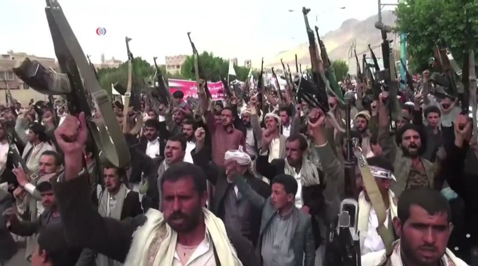

![NTK]()

Yemeni government forces say they've retaken the port city of Mocha and secured the Bab el-Mandeb Strait, the chokepoint the Houthis seized last month and through which 12% of global trade normally passes (Bloomberg). Saudi Arabia backed the advance with more than 100 fighter jets, according to coalition spokesman Maj. Gen. Turki al-Malki, who said the planes secured "air protection" over the strait and destroyed hundreds of Houthi targets (Los Angeles Times). Rashad al-Alimi, head of Yemen's Presidential Leadership Council, announced the offensive in a televised address, vowing to fight "until the country is liberated from the grip of the terrorist militia," the same promise Yemeni governments have made since the Houthis took Sanaa in 2014 (Australian Broadcasting Corporation). The Houthis deny any of it happened, calling the government's claims "completely untrue," and they've threatened to shoot down any aircraft in Saudi airspace (Australian Broadcasting Corporation).
The jets bought territory fast, but the ground war tells a different story. Government forces hold "a bunch of fronts" on "old pre-war gear," strong enough to defend lines but not to dislodge Houthi fighters from their mountain strongholds, according to Yemen analyst Raiman al-Hamdani (Al Jazeera). That gap between air coverage and ground capacity is the same one that trapped Saudi Arabia in an eight-year quagmire the first time it tried this, a pattern the kingdom's own planners know well enough that this time they didn't try to go it alone.
That's where the Mecca Pact comes in, a defense agreement Saudi Arabia, Turkey and Pakistan signed in August and are now testing for real. The three countries have agreed to activate "collective deterrence measures" and deploy Turkish and Pakistani forces to the kingdom, after what Pakistan's foreign ministry called "heinous attacks" on Saudi Arabia (Al Jazeera). The alliance exists because Washington's old job, defending Saudi Arabia, has gone unfilled: President Trump has declined to commit US forces, pushing Riyadh toward partners who will (Talking Points Memo). Secretary of State Marco Rubio confirmed intelligence sharing and planning support from Washington, but stopped short of describing any coordinated US combat role (Los Angeles Times).
The problem is that reaching that point may require another period of serious escalation before any settlement.
Raiman al-Hamdani, London-based Yemen analystAl-Hamdani's own forecast, that this war ends not in victory but in a negotiated settlement where the Houthis keep the north, is the same ending eight years of fighting produced the last time (Al Jazeera).
The jets secured the strait. The next two weeks decide whether the ground war repeats the quagmire or breaks the pattern.
Houthi fighters will almost certainly hold Taiz rather than lose it. The rebels besieged the city for more than a decade before this week's escalation, and encircling it was the opening move of their September offensive, not an improvised response to the government's counterattack. Government forces pushing toward Sanaa will draw Houthi units away from the coast to defend the capital, but Taiz is the harder prize: a populous, symbolic city the Houthis have invested a decade of siege lines into. Expect the government to claim progress around Taiz in press statements over the next 10 days while actual territorial control changes little, the same gap between announcement and verification that opened this week when the Houthis called Mocha "completely untrue" even as Saudi jets held the strait.
That gap is about to matter more, because the next phase of this war depends on an alliance that has never been tested in combat. Pakistani and Turkish troops will arrive in Saudi Arabia within the next two weeks, and the first real question will be what they're actually authorized to do. The Mecca Pact communiqué was short on specifics, and Pakistan's foreign ministry has committed to "agreed military forces and capabilities" without saying how many, under whose command, or with what rules of engagement. The most likely outcome is a limited deployment, air defense batteries, advisers, logistics support, rather than Turkish or Pakistani troops fighting Houthi forces on Yemeni soil. Turkey has its own reasons to stay cautious: Ankara has courted relationships across the Gulf and with Tehran simultaneously, and a deep combat commitment against an Iran-backed force risks that balance. Pakistan, for its part, is deploying forces abroad while managing its own economic strain at home, a mismatch worth watching for signs of domestic political cost.
This all seems to be moving into a more dangerous phase, and while the appetite for a full-scale war may exist among elements of the leadership on both sides, the reality is more complicated.
Raiman al-Hamdani, London-based Yemen analystThe complication al-Hamdani is pointing to is Washington's absence, and it will keep shaping the war's shape rather than its outcome. Rubio's intelligence sharing and planning support will almost certainly continue and even expand in the coming days, because it costs Washington nothing in troops or political exposure. What won't happen is a reversal of Trump's refusal to commit US forces to defending Saudi Arabia directly; that decision is what created the Mecca Pact in the first place, and nothing in the current posture suggests Washington wants the liability back. The practical effect: Saudi Arabia keeps fighting this war with borrowed troops and borrowed intelligence, never quite alone and never quite backed the way it used to be, a position with its own name among people who study how coalitions fracture under cost.
The Mecca Pact exists on paper. Whether it exists in practice is the door this week actually opened, and walking through it opens two more.
Turkish or Pakistani forces could take their first casualties on Saudi soil, forcing the Mecca Pact to become a real alliance or an exposed one. The Probabilities section flagged that Ankara and Islamabad have committed to something vague: "agreed military forces and capabilities," with no public detail on rules of engagement. But the Houthis have already threatened to attack any aircraft in Saudi airspace, and they've been firing missiles and drones at Saudi cities for weeks. If a Houthi strike reaches a Turkish air defense battery or a Pakistani logistics post inside the kingdom, Ankara and Islamabad face a choice that didn't exist when they signed the pact in August: escalate as treaty partners in an active war, or quietly limit their footprint to things that don't get shot at. That choice becomes visible only because troops are now actually arriving, not just promised.
That's the first door. The second one only opens if Pakistan is the country that takes the hit, because Pakistan is the partner with the least room to absorb one.
A Pakistani casualty in Saudi Arabia could collide with Islamabad's domestic politics in a way Turkey's wouldn't. Pakistan is deploying forces abroad while managing serious economic strain at home, a mismatch the Probabilities section already named. Combine that with the fact that Pakistan has a nuclear arsenal, a military that dominates its civilian government's foreign policy decisions, and a public that has not forgotten the costs of past foreign deployments tied to US and Gulf interests. A dead Pakistani soldier in a war against an Iran-backed militia, over a strait most Pakistanis couldn't locate on a map, is the kind of story that turns into a parliamentary fight in Islamabad within days, not months. That fight, not anything that happens on the Yemeni coast, is what could actually test whether the Mecca Pact survives contact with its first cost.
Not every door this week opened leads somewhere worse. One leads somewhere better, and it depends on the same ground-war stalemate the Probabilities section already expects.
The predicted stalemate around Taiz could be the thing that finally forces a negotiated settlement onto the table, years earlier than the last war allowed. Raiman al-Hamdani's forecast, Houthi control in the north, Saudi security guarantees, a power-sharing arrangement, is the same ending the first war took eight years to reach. But this time the Mecca Pact gives Saudi Arabia something it didn't have in the first war: outside partners with their own incentive to keep this contained rather than let it run another near-decade. Turkey has Gulf and Tehran relationships to protect. Pakistan has an economy that can't absorb a long war. If both partners start pressing Riyadh toward talks the moment the ground campaign stalls, rather than after years of sunk cost, the newly reachable outcome isn't a faster military win. It's a faster exit from a war everyone involved has already read the ending to.
Al-Malki's 100 jets and al-Alimi's televised vow are being sold to two different audiences as two different wars, and both tellings skip the part where this already failed once.
Yemen's government is calling the recapture of Mocha and the strait "liberation," as if the war is winding down rather than restarting. Rashad al-Alimi told Yemenis on television he was launching operations to "recover the remaining territories" and restore the state across "the entire national territory," language built for a finish line, not an opening bell (Deutsche Welle). Al-Malki's briefing carried the same confidence, hundreds of Houthi targets destroyed, air protection secured, a kingdom one push from "eliminating" the rebels (Los Angeles Times). Al-Alimi needs this framing because his government has spent a decade governing from Aden while Sanaa stayed Houthi, and a war sold as the final chapter is easier to fund, staff and justify to exhausted citizens than a war sold honestly: as round two of a fight Riyadh already lost once over eight years. Riyadh has its own reason to let the "liberation" framing stand uncorrected. A kingdom asking Ankara and Islamabad to commit troops, and asking its own public to absorb another war after the missiles and drones of recent weeks, needs a story with an ending, not a sequel.
The ending doesn't hold past Taiz. Yemen analyst Raiman al-Hamdani, quoted at length in Truths and Probabilities, said the far more plausible outcome is a negotiated, imperfect settlement where the Houthis keep real power in the north (Al Jazeera). That is not elimination. It is the same stalemate the first war produced, arrived at by the same coalition, using the same tool, air power, that didn't produce a different result the last time either.
These moves lend a serious and decisive dimension to the announced battle to liberate Sanaa and restore the state.
Ahmed al-Shalafi, Al Jazeera's Yemen correspondentAl-Shalafi's read, that the offensive shows "complete operational and political integration," is the more careful version of the same claim al-Alimi is making less carefully: that this time is different because the coordination is tighter. But tighter coordination between Riyadh, Ankara and Islamabad answers a question nobody asked. The first war didn't fail for lack of allies signing communiqués. It failed because Houthi fighters hold mountain terrain that 100 warplanes can't take and government forces, on "old pre-war gear" and spread across scattered fronts, can't either, a gap this week's offensive has not closed, only restated at higher volume.